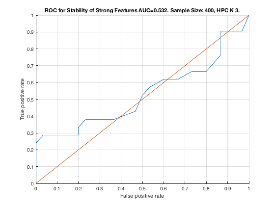

Feature Stability of HPC_K_3 on TieNet with 400 samples.
unit_stability_type(400, 1, "TieNet")
Figure 6. ROC for Stability of Strong Features AUC=0.532. Sample Size: 400, HPC K 3. _____________________________________________________________________________________
Table 6. Feature Stability of HPC K 3 on TieNet with 400 samples.
__________________________________________________________________
SELECTED COUNTS: Strong=21, Weak=26, Irrelevant=4
TOTAL COUNTS: Strong=23, Weak=26, Irrelevant=4
Feature_Number Stability Type Path_Length N_MBS Equivalence
______________ _________ ____________ ___________ _____ ___________
23 ' 0.566 ' ' STRONG ' 3 0 21
22 ' 0.224 ' ' STRONG ' 2 0 21
20 ' 0.178 ' ' STRONG ' 3 0 18
21 ' 0.136 ' ' STRONG ' 1 0 21
19 ' 0.070 ' ' STRONG ' 2 0 18
18 ' 0.054 ' ' STRONG ' 1 0 18
29 ' 0.054 ' ' weak ' 11 0 29
42 ' 0.042 ' 'irrelevant' Inf 0 42
25 ' 0.040 ' ' weak ' 6 0 25
40 ' 0.040 ' ' weak ' 3 0 40
30 ' 0.038 ' ' weak ' 10 0 30
39 ' 0.038 ' ' weak ' 4 0 39
5 ' 0.036 ' ' STRONG ' 3 0 1
6 ' 0.032 ' ' STRONG ' 3 0 1
51 ' 0.032 ' ' weak ' 4 0 51
33 ' 0.030 ' ' weak ' 8 0 33
45 ' 0.030 ' ' weak ' 7 0 45
38 ' 0.028 ' ' weak ' 5 0 38
50 ' 0.028 ' ' weak ' 5 0 50
11 ' 0.026 ' ' STRONG ' 4 0 7
28 ' 0.026 ' ' weak ' 5 0 28
37 ' 0.026 ' ' weak ' 6 0 37
44 ' 0.026 ' 'irrelevant' Inf 0 44
9 ' 0.024 ' ' STRONG ' 3 0 7
17 ' 0.024 ' ' STRONG ' 4 36 12
36 ' 0.024 ' ' weak ' 8 36 36
10 ' 0.020 ' ' STRONG ' 4 54 7
35 ' 0.020 ' ' weak ' 7 54 35
4 ' 0.018 ' ' STRONG ' 4 81 1
24 ' 0.018 ' ' weak ' 4 81 24
53 ' 0.018 ' ' weak ' 5 81 53
27 ' 0.016 ' ' weak ' 6 81 27
52 ' 0.016 ' ' weak ' 4 81 52
3 ' 0.014 ' ' STRONG ' 4 108 1
43 ' 0.014 ' 'irrelevant' Inf 108 43
46 ' 0.014 ' ' weak ' 7 108 46
41 ' 0.012 ' ' weak ' 3 108 41
49 ' 0.012 ' ' weak ' 6 108 49
8 ' 0.010 ' ' STRONG ' 2 144 7
13 ' 0.010 ' ' STRONG ' 2 288 12
31 ' 0.010 ' ' weak ' 9 288 31
32 ' 0.010 ' ' weak ' 8 288 32
2 ' 0.008 ' ' STRONG ' 2 360 1
7 ' 0.006 ' ' STRONG ' 1 450 7
15 ' 0.006 ' ' STRONG ' 3 675 12
34 ' 0.004 ' ' weak ' 8 675 34
47 ' 0.004 ' 'irrelevant' Inf 675 47
48 ' 0.004 ' ' weak ' 6 675 48
14 ' 0.002 ' ' STRONG ' 3 900 12
16 ' 0.002 ' ' STRONG ' 2 1125 12
26 ' 0.002 ' ' weak ' 5 1125 26